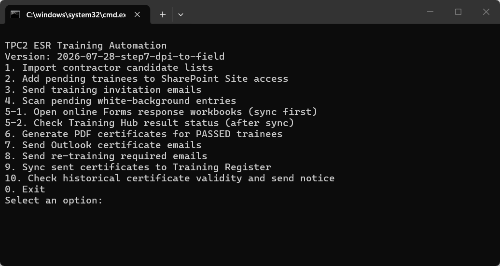

ESR P/CP Training｜Follow the numbers¶
Run ESR Training Automation (English).cmd
.cmd file above.5-1.
🔍 Click any instruction image to enlarge it. Use ＋／－ to zoom and Esc to close.
Remember: Steps 3, 7, 8 and 10 can send real emails
Check the name and email address before running them. The other Steps do not send emails.
Open once each day: follow only this line¶
- Type
5-1→ press Enter → six online result workbooks open. - If asked, choose your OAIC /
@oaic.ioaccount. Keep the pages open for 1–2 minutes. - Return to the black window. Run
5-2only if white pending rows exist. If there are no white rows, today's check is finished.
Click a Step to jump to its instructions¶
Step 1｜Import a contractor P/CP candidate list¶
- No list yet: open
00_Template\Training email Templatesand send1. Person _ CP Candidate Request.oft. - When the Excel file returns, place it in
01_Inbox\P_CP Candidate Lists. - Open the English
.cmd, type1, then press Enter. Done. Imported...means the import is complete.- If
CONTRACTOR REPLY - Candidate Validity Confirmationappears, open Template 2, paste the text copied by the tool, and send it to the contractor.


Step 2｜Add SharePoint Site access¶
- Type
2, then press Enter. - At the browser question, press Enter for Chrome, type
Efor Edge, or typeFfor Firefox. - Do not use the mouse or keyboard while it is running.
完成 SharePoint Site access：成功 ...means “Site access completed” and confirms it is finished.
No white pending rows
There is nothing to process. Return to the menu.
Step 3｜Send a Training invitation¶
- Confirm which person should receive the invitation.
- Type
3, then press Enter. - Enter the requested single email address, then press Enter.
- Only
SENT: ... training invitationconfirms that it was sent.
This Step sends an email
If the email is wrong, do not press Enter. Close the black window and start again.
Step 4｜Show white pending rows¶
目前沒有偵測到白底待處理人員 means “No white pending rows detected”. Nobody needs Steps 5-2, 6 or 7 at this time.
Step 5-1｜Open online result workbooks first¶
- Type
5-1, then press Enter. - Press Enter for Chrome. Type
Eonly for Edge. - Six result pages open. If Microsoft asks for an account, choose your OAIC /
@oaic.ioaccount. - Keep the pages open and wait 1–2 minutes.
- Return to the same black window and continue with Step 5-2.
Step 5-2｜Check the latest Training Hub results¶
- Person: total score
≥ 36is PASSED. - CP: Module 1
≥ 20and Module 2≥ 20are both required. WAIT: do not continue to Steps 6 or 7.PASSED: continue to Step 6.

Step 6｜Create PDF certificates¶
- Type
6, then press Enter. 完成，已自動產生以上 PDF 證書means the PDF certificates were generated.- Open
04_Certificatesand check the name, level and PDF.

Step 7｜Send Certificate emails¶
- Close unrelated Outlook drafts.
- Type
7, then press Enter. - If an “unconfirmed” retry list appears, enter a number/email only for a retry. Press Enter for the normal pending list.
- Each person needs
SENT: email, followed byRegister synchronization completed.
This sends every certificate that is ready
Check all PDFs in 04_Certificates first. Do not use Step 7 as a test.
Step 8｜Send Re-training Required emails¶
- Use Step 5-2 first and confirm who failed.
- Only after the list is correct, type
8, then press Enter. - The tool lists the recipients and continues with sending. Only
SENT: re-training required emailconfirms success.
This Step sends emails
If you are unsure who will receive them, do not run it.
Step 9｜Repair the Training Register sync¶
Normally, do not run Step 9. If Step 7 shows Register synchronization completed, you are finished.
Step 10｜Check an old valid certificate and send notice¶
- Type
10, then press Enter. - Enter the trainee's full email address, then press Enter. Email is safer than a name.
- No match, an expired certificate or an ambiguous name stops without sending.
SENT: emailconfirms that the English validity notice was sent.
A valid result sends an email immediately
Check the email again before pressing Enter. Do not guess with a partial name.
First use: install tools + show Outlook Bcc
- Double-click
Install ESR Automation Prerequisites.cmd. - Wait for
Python packages OK. - Outlook: File → Settings.

- Mail → Compose → Always show Bcc.

Where are the folders?
- Main tool folder:
OAIC Ltd\PROJECT_TWSHXESR - Documents\General\ESR AutoDoc Hub\04_ESR Training - Contractor lists:
01_Inbox\P_CP Candidate Lists - Email templates:
00_Template\Training email Templates - Training results:
02_Processing - Certificates:
04_Certificates - Formal Register:
Safety Document - SFD Register\TWSHXHV_ESR_OverallRegister.xlsm - Worksheet written by the tool:
Old Training Register
Stuck?
Close related Excel files and Outlook drafts, then run the same Step again from the English .cmd. If the screen shows FAILED, ERROR or WARNING, take a screenshot before continuing.